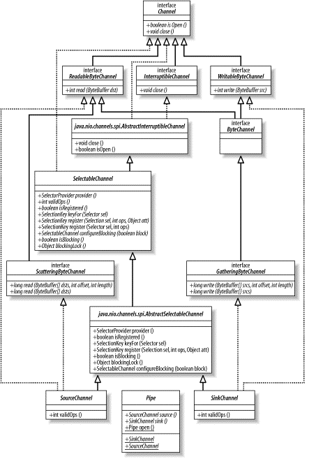

日期: 2012-10-22 19:07
ByteWritabelChannel, ByteReadableChannel
java.nio.channels.spi 的类继承而来，这里面两个重要的类：`AbstractSelectableChannel, AbstractInterruptibleChannel`
| I/O | Channel | Creation |
|---|---|---|
| File I/O | FileChannel | RandomAccessFile, FileOutputStream, FileInputStream 的getChannel()方法 |
| Stream I/O | SocketChannel | SocketChannel.open() |
| ServerSocketChaneel | ServerSocketChannel.open() | |
| DatagramChannel | DatagramChannel.open() |
Demo:
SocketChannel sc = SocketChannel.open();
sc.connect (new InetSocketAddress ("somehost", someport));
ServerSocketChannel ssc = ServerSocketChannel.open();
ssc.socket().bind (new InetSocketAddress (somelocalport));
DatagramChannel dc = DatagramChannel.open();
RandomAccessFile raf = new RandomAccessFile ("somefile", "r");
FileChannel fc = raf.getChannel();
//每次读之前，清空buffer, 较多的系统调用
private static void channelCopey1(ReadableByteChannel in, WritableByteChannel out) throws IOException {
ByteBuffer byteBuffer = ByteBuffer.allocateDirect(1024);
while(in.read(byteBuffer)!=-1){
byteBuffer.flip();
while (byteBuffer.hasRemaining()) {
out.write(byteBuffer);
}
byteBuffer.clear();
}
}
//写一次，压缩，接着读, 较少的系统调用， 最后需要check
private static void channelCopey2(ReadableByteChannel in, WritableByteChannel out) throws IOException {
ByteBuffer byteBuffer = ByteBuffer.allocateDirect(1024);
while(in.read(byteBuffer)!=-1){
byteBuffer.flip();
out.write(byteBuffer);
byteBuffer.compact();
}
byteBuffer.flip();
while (byteBuffer.hasRemaining()){
out.write(byteBuffer);
}
}
package java.nio.channels;
public interface Channel {
public boolean isOpen( );
public void close( ) throws IOException;
}
public interface ScatteringByteChannel extends ReadableByteChannel {
public long read (ByteBuffer [] dsts) throws IOException;
public long read (ByteBuffer [] dsts, int offset, int length) throws IOException; }
public interface GatheringByteChannel extends WritableByteChannel {
public long write(ByteBuffer[] srcs) throws IOException;
public long write(ByteBuffer[] srcs, int offset, int length) throws IOException;
//offset 从Buffer数组中的哪个buffer使用起
//length 使用几个buffer
}
package java.nio.channels;
public abstract class FileChannel extends AbstractChannel implements ByteChannel, GatheringByteChannel, ScatteringByteChannel {
// This is a partial API listing
// All methods listed here can throw java.io.IOException
public abstract int read (ByteBuffer dst, long position)
public abstract int write (ByteBuffer src, long position)
public abstract long size( )
public abstract long position( )
public abstract void position (long newPosition)
public abstract void truncate (long size)
public abstract void force (boolean metaData)
public final FileLock lock( )
public abstract FileLock lock (long position, long size, boolean shared)
public final FileLock tryLock( )
public abstract FileLock tryLock (long position, long size, boolean shared)
public abstract MappedByteBuffer map (MapMode mode, long position, long size)
public static class MapMode {
public static final MapMode READ_ONLY
public static final MapMode READ_WRITE
public static final MapMode PRIVATE
}
public abstract long transferTo (long position, long count, WritableByteChannel target)
public abstract long transferFrom (ReadableByteChannel src, long position, long count)
}
public abstract class FileChannel extends AbstractChannel implements ByteChannel, GatheringByteChannel, ScatteringByteChannel {
// This is a partial API listing
public final FileLock lock( ) //能锁定的最大范围:fileChannel.lock (0L, Long.MAX_VALUE, false);
public abstract FileLock lock (long position, long size, boolean shared)
public final FileLock tryLock( )
public abstract FileLock tryLock (long position, long size, boolean shared)
}
public abstract class FileLock
{
public final FileChannel channel( )
public final long position( )
public final long size( )
public final boolean isShared( )
public final boolean overlaps (long position, long size)
public abstract boolean isValid( );
public abstract void release( ) throws IOException;
}
public abstract class FileChannel extends AbstractChannel implements ByteChannel, GatheringByteChannel, ScatteringByteChannel {
// This is a partial API listing
public abstract MappedByteBuffer map (MapMode mode, long position,long size)//不能超出文件大小或范围, 否则文件会被增大, 即使是读操作
public static class MapMode {
public static final MapMode READ_ONLY
public static final MapMode READ_WRITE
public static final MapMode PRIVATE //写时拷贝
public final MappedByteBuffer load( )
public final boolean isLoaded( )
public final MappedByteBuffer force( )
}
}
public abstract class FileChannel extends AbstractChannel implements ByteChannel, GatheringByteChannel, ScatteringByteChannel {
// This is a partial API listing
public abstract long transferTo (long position, long count, WritableByteChannel target)
public abstract long transferFrom (ReadableByteChannel src, long position, long count)
}
public abstract class SelectableChannel extends AbstractChannel implements Channel {
// This is a partial API listing
public abstract void configureBlocking (boolean block) throws IOException;
public abstract boolean isBlocking( );
public abstract Object blockingLock( );
}
Socket socket = null;
Object lockObj = serverChannel.blockingLock( );
// have a handle to the lock object, but haven't locked it yet
// may block here until lock is acquired
synchronize (lockObj) {
// This thread now owns the lock; mode can't be changed boolean
prevState = serverChannel.isBlocking( );
serverChannel.configureBlocking (false);
socket = serverChannel.accept( );
serverChannel.configureBlocking (prevState);
}
// lock is now released, mode is allowed to change
if (socket != null) {
doSomethingWithTheSocket (socket);
}
public abstract class ServerSocketChannel extends AbstractSelectableChannel {
public static ServerSocketChannel open( ) throws IOException
public abstract ServerSocket socket( );
public abstract ServerSocket accept( ) throws IOException;
public final int validOps( )
}
ServerSocketChannel ssc = ServerSocketChannel.open( );
ServerSocket serverSocket = ssc.socket( );
// Listen on port 1234
serverSocket.bind (new InetSocketAddress (1234));
public abstract class SocketChannel extends AbstractSelectableChannel
implements ByteChannel, ScatteringByteChannel, GatheringByteChannel {
// This is a partial API listing
public static SocketChannel open( ) throws IOException
public static SocketChannel open (InetSocketAddress remote) throws IOException
public abstract Socket socket( );
public abstract boolean connect (SocketAddress remote) throws IOException;
public abstract boolean isConnectionPending( );
public abstract boolean finishConnect( ) throws IOException;
public abstract boolean isConnected( );
public final int validOps( )
}
SocketChannel是线程安全的. connect( )和finishConnect( )方法是互相同步的，并且只要其中一个操作正在进行，任何读或写的方法调用都会阻塞，即使是在非阻塞模式下。如果此情形下您有疑问或不能承受一个读或写操作在某个通道上阻塞，请用isConnected( )方法测试一下连接状态。
public abstract class DatagramChannel extends AbstractSelectableChannel
implements ByteChannel, ScatteringByteChannel, GatheringByteChannel {
// This is a partial API listing
public static DatagramChannel open( ) throws IOException
public abstract DatagramSocket socket( );
public abstract DatagramChannel connect (SocketAddress remote) throws IOException;
public abstract boolean isConnected( );
public abstract DatagramChannel disconnect( ) throws IOException;
public abstract SocketAddress receive (ByteBuffer dst) throws IOException;
public abstract int send (ByteBuffer src, SocketAddress target)
public abstract int read (ByteBuffer dst) throws IOException;
public abstract long read (ByteBuffer [] dsts) throws IOException;
public abstract long read (ByteBuffer [] dsts, int offset, int length) throws IOException;
public abstract int write (ByteBuffer src) throws IOException;
public abstract long write(ByteBuffer[] srcs) throws IOException;
public abstract long write(ByteBuffer[] srcs, int offset, int length) throws IOException;
}
public abstract class DatagramChannel extends AbstractSelectableChannel
implements ByteChannel, ScatteringByteChannel, GatheringByteChannel {
// This is a partial API listing
public abstract SocketAddress receive (ByteBuffer dst) throws IOException;
public abstract int send (ByteBuffer src, SocketAddress target)
}
public abstract class DatagramChannel extends AbstractSelectableChannel
implements ByteChannel, ScatteringByteChannel, GatheringByteChannel{
// This is a partial API listing
public abstract DatagramChannel connect (SocketAddress remote) throws IOException;
public abstract boolean isConnected( );
public abstract DatagramChannel disconnect( ) throws IOException;
}

package java.nio.channels;
public abstract class Pipe {
public static Pipe open( ) throws IOException
public abstract SourceChannel source( );
public abstract SinkChannel sink( );
public static abstract class SourceChannel
extends AbstractSelectableChannel
implements ReadableByteChannel, ScatteringByteChannel
public static abstract class SinkChannel
extends AbstractSelectableChannel
implements WritableByteChannel, GatheringByteChannel
}